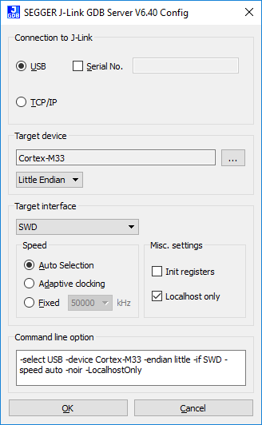

DA1469x Restore Factory Firmware instructions¶
In order to restore the factory firmware you will need the following items:
First start the JLink GBD server with the following options:
- Connection: USB
- Target Device: Cortex-M33
- interface: swd

Please open a terminal and execute:
> cd <SDKROOT>/binaries
> ./cli_programmer.exe gdbserver write_qspi 0x0 <path_to_binary>/69x_kit_factory_fw/.bin
You’re device is now back to its state out of Dialog’s production line.
License¶
Copyright (c) 2019 Dialog Semiconductor. All rights reserved.
This software (“Software”) is owned by Dialog Semiconductor. By using this Software you agree that Dialog Semiconductor retains all intellectual property and proprietary rights in and to this Software and any use, reproduction, disclosure or distribution of the Software without express written permission or a license agreement from Dialog Semiconductor is strictly prohibited. This Software is solely for use on or in conjunction with Dialog Semiconductor products.
EXCEPT AS OTHERWISE PROVIDED IN A LICENSE AGREEMENT BETWEEN THE PARTIES OR AS REQUIRED BY LAW, THE SOFTWARE IS PROVIDED “AS IS”, WITHOUT WARRANTY OF ANY KIND, EXPRESS OR IMPLIED, INCLUDING BUT NOT LIMITED TO THE WARRANTIES OF MERCHANTABILITY, FITNESS FOR A PARTICULAR PURPOSE AND NON-INFRINGEMENT. EXCEPT AS OTHERWISE PROVIDED IN A LICENSE AGREEMENT BETWEEN THE PARTIES OR BY LAW, IN NO EVENT SHALL DIALOG SEMICONDUCTOR BE LIABLE FOR ANY DIRECT, SPECIAL, INDIRECT, INCIDENTAL, OR CONSEQUENTIAL DAMAGES, OR ANY DAMAGES WHATSOEVER RESULTING FROM LOSS OF USE, DATA OR PROFITS, WHETHER IN AN ACTION OF CONTRACT, NEGLIGENCE OR OTHER TORTIOUS ACTION, ARISING OUT OF OR IN CONNECTION WITH THE USE OR PERFORMANCE OF THE SOFTWARE.